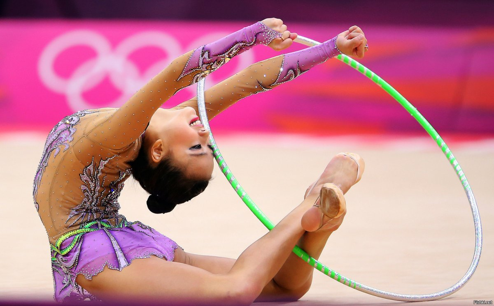
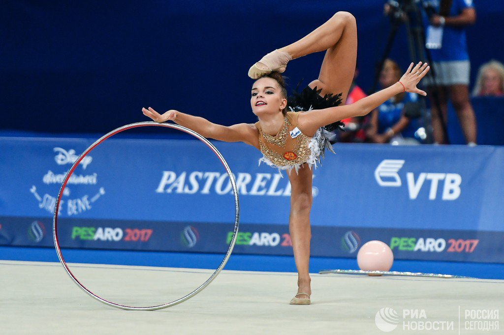
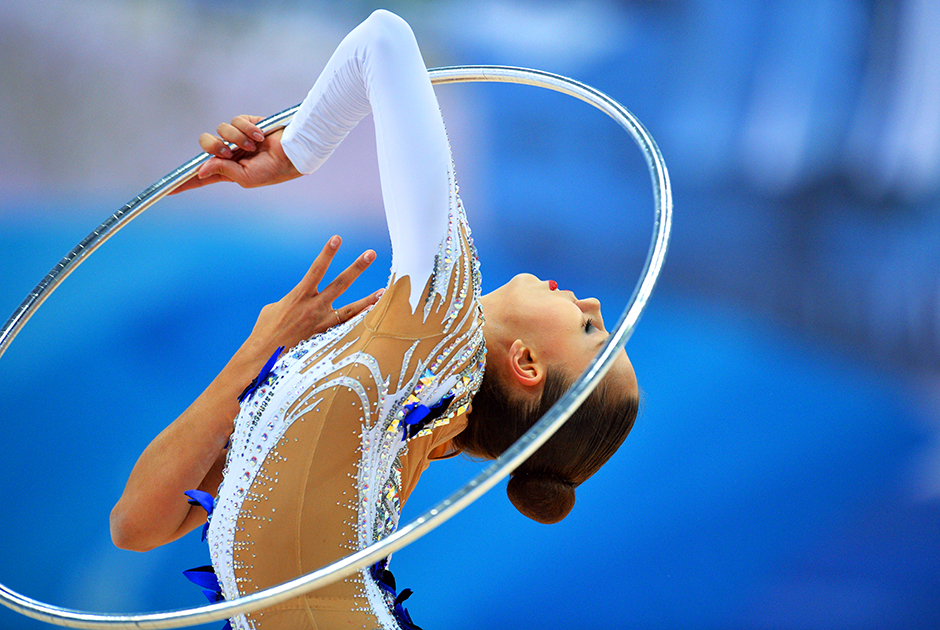

Художественная гимнастика
Обруч
Обруч-это аппарат в художественной гимнастике,
который может быть изготовлен из пластика или дерева при условии,
что он сохраняет свою форму во время выполнения упражнения.Основные требования упражнения с обручем включают
вращение вокруг руки или тела и прокатку,
а также круги, броски и проходы через обруч и над ним.


